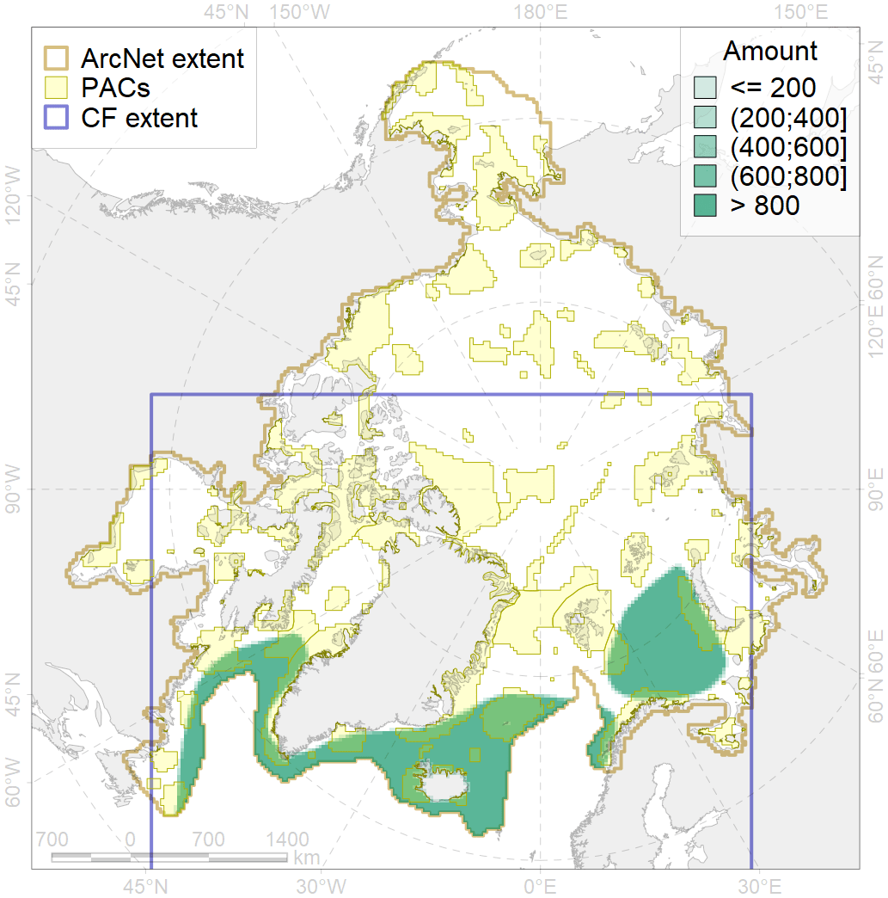

6023

| CF ID | 6023 |
| CF Name | Atlantic puffin (Fratercula arctica naumanni) wintering grounds |
| Time Period | 2000-2018 |
| Source(s) | Lowther et al 2002, http://seatrack.seapop.no/map/ |
| Seasonality | October-April |
| Depth Horizon | >0 m |
| Methodology | Field Data |
| Author Name | Gavrilo, Tertitski |
| Notes | |
| Conservation Target Set in the Scenario | 0.24 |
| Conservation Target Achieved in the Scenario | 0.296 (Scenario: 123.3%) |
| PAC ID | Proportion in the PAC | Contribution to ArcNet Target Achievement | PAC’s Contribution to the Achieved Target |
|---|---|---|---|
| 21 | 3.7% | 13.5% | 10.9% |
| 27 | 2.5% | 7.9% | 6.4% |
| 31 | 1.8% | 6.8% | 5.5% |
| 32 | 2.4% | 8.1% | 6.6% |
| 34 | 6.0% | 21.8% | 17.7% |
| 35 | 0.1% | 0.4% | 0.3% |
| 36 | 0.4% | 1.3% | 1.1% |
| 37 | 0.3% | 0.6% | 0.5% |
| 38 | 1.9% | 6.7% | 5.5% |
| 39 | 0.4% | 1.4% | 1.1% |
| 40 | 0.1% | 0.2% | 0.2% |
| 41 | 0.4% | 0.9% | 0.7% |
| 42 | 1.5% | 5.9% | 4.8% |
| 43 | 0.1% | 0.5% | 0.4% |
| 44 | 3.1% | 11.8% | 9.6% |
| 45 | 1.9% | 7.5% | 6.1% |
| 76 | 1.4% | 5.8% | 4.7% |
| 77 | 0.5% | 1.9% | 1.5% |
| 81 | 0.6% | 2.7% | 2.2% |
| inner | 29.0% | 105.8% | 85.8% |
| outer | 69.2% | 17.5% | 14.2% |